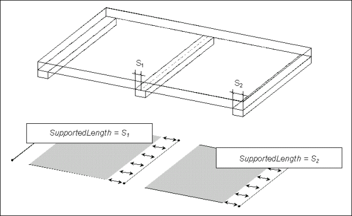

7.7.3.2 IfcRelConnectsStructuralMember
| Verbindet idealisierte Tragelemente - Relation |
The entity IfcRelConnectsStructuralMember defines all needed properties describing the connection between structural members and structural connection objects (nodes or supports).
HISTORY New entity in IFC2x2.
Use Definition
Point Connection
Instances of the entity IfcRelConnectsStructuralMember shall be used to describe a connection between an instance of IfcStructuralPointConnection and either an instance of IfcStructuralCurveMember or IfcStructuralSurfaceMember. The RelatedStructuralConnection for point connections has to be of type IfcStructuralPointConnection.
Curve Connection
Instances of the entity IfcRelConnectsStructuralMember shall be used to describe a connection between an instance of IfcStructuralCurveConnection and an instance of either IfcStructuralCurveMember or IfcStructuralSurfaceMember. The RelatedStructuralConnection for curve connections has to be of type IfcStructuralCurveConnection.
Surface Connection
Instances of the entity IfcRelConnectsStructuralMember shall be used to describe a connection between an instance of IfcStructuralSurfaceConnection and an instance of IfcStructuralSurfaceMember. The RelatedStructuralConnection for curve connections has to be of type IfcStructuralSurfaceConnection.
Coordinate System for Applied Conditions
All values defined by AppliedCondition or AdditionalConditions are given within the coordinate system provided by ConditionCoordinateSystem, which is defined relative to the local coordinate system of the structural member. If the ConditionCoordinateSystem is not defined, the local coordinate system of the structural member is used instead.
Supported Length
Optionally a supported length can be given, which specifies the length (or width) of the physical connection along a curve connection.
Figure 271 illustrates the appropriate definition of support lengths.
|

|
|
Figure 271 — Structural member support lengths
|
XSD Specification:
<xs:element name="IfcRelConnectsStructuralMember" type="ifc:IfcRelConnectsStructuralMember" substitutionGroup="ifc:IfcRelConnects" nillable="true"/>
<xs:complexType name="IfcRelConnectsStructuralMember">
<xs:complexContent>
<xs:extension base="ifc:IfcRelConnects">
<xs:sequence>
<xs:element name="RelatingStructuralMember" type="ifc:IfcStructuralMember" nillable="true"/>
<xs:element name="RelatedStructuralConnection" type="ifc:IfcStructuralConnection" nillable="true"/>
<xs:element name="AppliedCondition" type="ifc:IfcBoundaryCondition" nillable="true" minOccurs="0"/>
<xs:element name="AdditionalConditions" type="ifc:IfcStructuralConnectionCondition" nillable="true" minOccurs="0"/>
<xs:element name="ConditionCoordinateSystem" type="ifc:IfcAxis2Placement3D" nillable="true" minOccurs="0"/>
</xs:sequence>
<xs:attribute name="SupportedLength" type="ifc:IfcLengthMeasure" use="optional"/>
</xs:extension>
</xs:complexContent>
</xs:complexType>
EXPRESS Specification:
|
ENTITY IfcRelConnectsStructuralMember
|
 EXPRESS-G diagram
EXPRESS-G diagram
Attribute Definitions:
| RelatingStructuralMember | : | Reference to an instance of IfcStructuralMember (or its subclasses) which is connected to the specified structural connection. |
| RelatedStructuralConnection | : | Reference to an instance of IfcStructuralConnection (or its subclasses) which is connected to the specified structural member. |
| AppliedCondition | : | Conditions which define the connections properties. Connection conditions are often called "release" but are not only used to define mechanisms like hinges but also rigid, elastic, and other conditions. |
| AdditionalConditions | : | Describes additional connection properties. |
| SupportedLength | : | Defines the 'supported length' of this structural connection. See Fig. for more detail. |
| ConditionCoordinateSystem | : |
Defines a coordinate system used for the description of the connection properties in ConnectionCondition relative to the local coordinate system of RelatingStructuralMember. If left unspecified, the placement IfcAxis2Placement3D((x,y,z), ?, ?) is implied with x,y,z being the local member coordinates where the connection is made and the default axes directions being in parallel with the local axes of RelatingStructuralMember.
|
Inheritance Graph:
|
ENTITY IfcRelConnectsStructuralMember
|
Examples:
 Link to this page
Link to this page